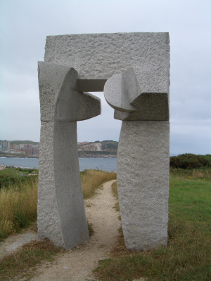

Esta página ya no se mantiene más (25/Diciembre/2009)
|
Monolito: Librería de componentes para Kicad |
|
 |
|
|
Esta página ya no se mantiene más (25/Diciembre/2009) |
Monolito es una librería de componentes para la herramienta libre de diseño electrónico Kicad. Hay tanto componentes para el esquemático como módulos para el PCB.
Siempre me ha gustado crearme mis propias librerías de componentes, hechos desde cero. Me ha servido para aprender a manejar mejor las herramientas de diseño electrónico. Además, me gusta agrupar en una librería todos los componentes que suelo utilizar en mis diseños, como por ejemplos los conectores acodados de bus, o el conector telefónico hembra RJ11.
En todas las aplicaciones que he manejado, siempre he terminado haciéndome mis propios componentes. Y aquí es donde me he encontrado con un problema muy grave: he tenido que estar reinventando la rueda constantemente debido a los formatos propietarios de las herramientas electrónicas. Mis primeros componente los diseñe con el Orcad. Luego me pasé al Tango para los PCBs, rehaciendo otra vez los componentes necesarios. Más adelante, di el salto definitivo a Linux y comencé a utilizar el Eagle. De nuevo tuve que rehacer los componetes... Estaba cansado de que ficheros creados por mí sólo se pudiesen ver con aplicaciones propietarias, de unas empresas determinadas, y que no fuesen compatibles con los demás. Con la aparición de la herramienta libre Kicad lo vi muy claro. Ahora mis componentes estaría guardado en un formato Abierto. Ya nunca más perdería la información.
Así es como ha nacido la librería monolito, que espero que sea la definitiva, y que poco a poco pueda ir creciendo con más y más componentes.
 This work is licensed
under a Creative
Commons Attribution 2.5 Spain License.
This work is licensed
under a Creative
Commons Attribution 2.5 Spain License.
Estos componentes no se han validado todavía en fabricación, porque no han sido utilizados para la fabricación industrial.
Componentes para el Esquemático
MAX232
TEL6: Conector telefónico
TEL6_DOC: Documetanción para el conector telefónico
CPOL: Condensador electrolítico
CONDENSADOR
JUMPER
JUMPER_TRIPLE
PULSADOR
PULSADOR_DOC: Documentación del patillaje del pulsador
CLEMA3: Clema triple
LED_DOC: Documentación para el LED
Esta es la versión que se empleó para la tarjeta Freeleds. Por ello están todos validados y se pueden utilizar para la fabricación industrial.
Componentes para el esquemático (Validados)
CT: Conector tipo CT
CT_DOC: Documentación de los pines del conector CT
Resistencia1
Resistencia2
DIODO_LED
Componentes para el PCB (Validados)
CON2X5A: Conector tipo CT acodado
LED3MM: Led de 3mm
RES14W: Resistencia de 1/4W
TALADRO3MM: Taladro para tornillos de 3mm
|
Monolito-0.2 |
|
Fuentes de la librería. Esquemático y módulos para PCB |
|
|
Esquema de los componentes de la version 0.2. En PDF |
|
|
Modulos para PCB de la version 0.2. Formato PDF. |
Herramienta libre de diseño electrónico, Kicad
24/Octubre/2005: Publicada primera versión de esta página
Muchos de los componentes están basados en otros de las propias librerías de Kicad.
|
|